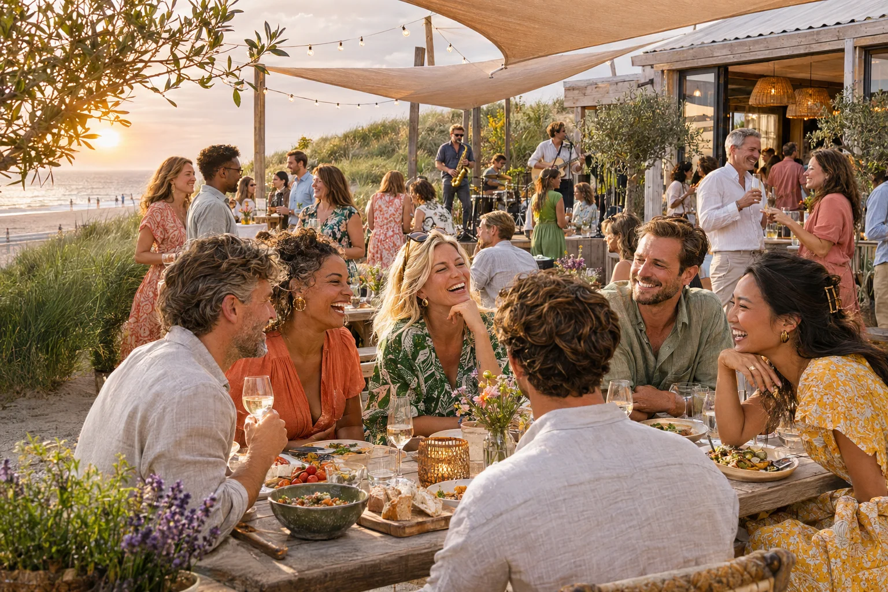

Meet us by the seaSummer
Social
Social
18JUN
2027
2027
Fictieve voorbeeldcase · Alleen op uitnodiging
Vrijdag 18 juni 2027
Goede mensen. Gouden avond.
Coastline Collective trekt naar zee voor beach bites, ontspannen activiteiten en een liveband die de zonsondergang van een eigen soundtrack voorziet.
Tijd16:00–23:00
LocatieDune House, Noordwijk
DresscodeSummer casual
De middag in het kort
- Welcome drink & beach bites
- Vrije keuze: games, surf of lounge
- Sunset dinner & liveband
Persoonlijke uitnodigingBekijk en beheer jouw deelname